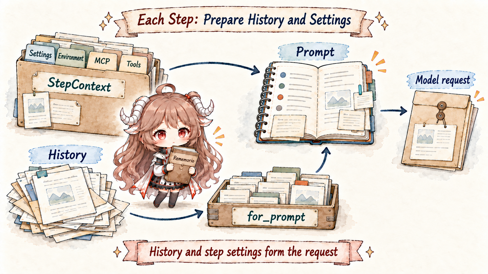
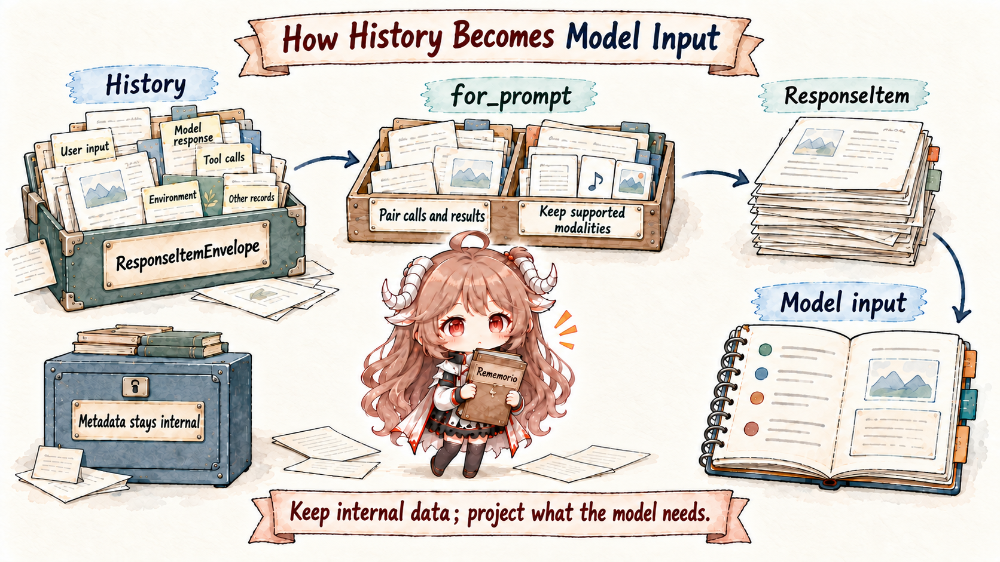
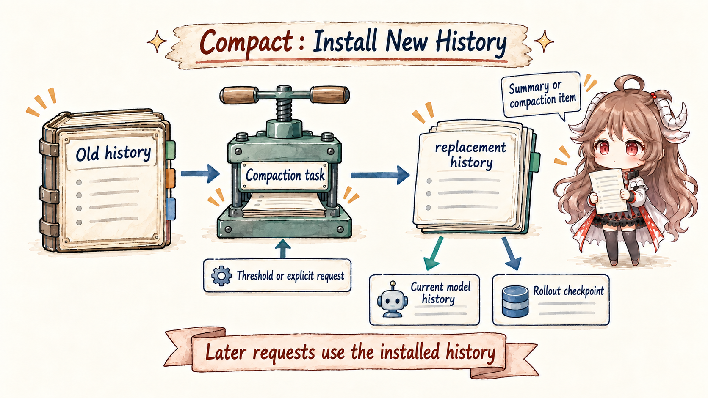

Start with a normal Codex session. You ask it to fix a bug in a
repository. It reads AGENTS.md, searches source files,
runs a test, inspects the failure, and edits the patch. Halfway
through, you add a constraint: do not touch generated files. Later
the thread approaches the context limit and compacts. The next
morning, you resume the thread and expect the agent to continue
from the right place.
A plain "append every message to a chat history" model cannot explain this workflow. Repository instructions, working directory, sandbox policy, skill metadata, tool schemas, tool outputs, images, reasoning tokens, pending user input, compaction summaries, and resume baselines have different owners. Some must be durable. Some are only model-visible for one request. Some may be truncated. Some must be re-injected from scratch if the baseline becomes unreliable.
The official Codex docs provide the product contract: a thread is a session made from prompts, model outputs, and tool calls; as the agent works, it gathers context from files, tool output, and its running record; everything must fit in the model's context window, and long threads may be compacted. The source answers the next question: where does that information live, when does it become model-visible, and what gets installed after compaction?
OpenAI's
agent-loop article
makes the external constraints concrete: a model request is made from
prompt, tools, input, and related request fields; long-running work also
has to deal with prompt cache, the context window, and compaction.
The source-level question is which of those constraints is carried by
ContextManager, TurnContext, and replacement history,
and which state remains durable versus turn-local.
Evidence boundary. This article treats official documentation as the product-level contract and the public openai/codex source as the implementation evidence. Source links point to one fixed public snapshot. Where the source exposes only the remote-compaction selection boundary, this article describes the visible lifecycle and does not infer the server-side summarization algorithm.
The article follows five questions:
- Why is durable history not the same thing as the prompt?
- When does Codex inject full initial context, and when does it emit only a diff?
- What does
for_prompt()normalize or filter? - During compaction, which ledger is replaced and what recovery record remains?
- Why do rollback, resume, and model switches affect the next context injection?
1. Separate The Four Surfaces
The first step is to stop looking for one memory object. Codex has at least four relevant surfaces: session-scoped state, per-turn configuration, durable history, and the model-visible request view. They are not interchangeable.
SessionState
owns session-level state such as history: ContextManager,
additional_context, previous_turn_settings,
and auto_compact_window. A
TurnContext
is the per-turn snapshot: model, cwd, date, timezone, developer
instructions, user instructions, collaboration mode, permissions,
skill context, final output schema, and more. It is not a user
message. It is the structured runtime environment for one turn.
| Surface | Source owner | Model-visible? | Invariant protected |
|---|---|---|---|
| Session state | SessionState |
Not as a whole | Keep history, permission baselines, compaction windows, and recovery state across turns. |
| Turn snapshot | TurnContext |
Partly, through context messages and request fields | Give one turn a coherent source of model, cwd, sandbox, date, and skills. |
| Durable history | ContextManager.items |
Only after projection | Retain recoverable API messages, tool calls, outputs, and compaction records. |
| Model-visible prompt | for_prompt() + Prompt |
Yes | Send a legal request view adapted to the current model and tools. |
The ContextManager
comment calls it a transcript of thread history, but the struct
also carries history_version, token_info,
and reference_context_item. That last field is the
baseline used to generate model-visible settings updates. If it is
missing, the next regular turn falls back to full context
reinjection instead of diffing against stale state.
2. A Turn Does Not Jump Straight From User Input To Model
In run_turn,
the first step is not to record the new user message. Codex first
runs pre-sampling compaction. A nearby source note says this happens
before context updates and the new user message are recorded, and
that pending incoming items should eventually be estimated before
deciding whether the thread crosses the compaction threshold.

After that, run_turn records context updates, builds
skill and plugin injections, runs hooks, records user input, and
stores injection items. Only then does it prepare
sampling_request_input by cloning history and calling
for_prompt(). The request is a view derived from the
ledger, not the ledger itself.
turn starts
-> maybe compact old history
-> inject full context or settings diff
-> load skills/plugins chosen for this turn
-> record user input and additional context
-> clone history
-> for_prompt(input_modalities)
-> build Prompt with tools and base instructions
-> stream model response
The turn loop also treats pending input carefully. A
source comment
says the turn-scoped ModelClientSession is reused
across retries, while pending input is deliberately not drained at
the very start of a turn or immediately after auto-compaction.
That ordering preserves continuation semantics. If a steer is
inserted in the wrong place, the model may resume the wrong work.
2.1 Initial Context Is Synthesized Runtime State
Full initial context comes from
build_initial_context.
It collects model-switch guidance, permission instructions,
developer instructions, collaboration mode, realtime state,
personality, apps instructions, available skills, plugins,
extension fragments, token budget context, environment context,
and user instructions. These become developer or contextual user
messages. They are not the user chat message.
The structured baseline is stored as a
TurnContextItem.
That lets Codex later decide whether a new turn can emit only a
settings diff or must re-inject the full context bundle.
2.2 Steady-State Turns Emit Diffs, With Clear Limits
record_context_updates_and_set_reference_context_item
is the normal runtime path. If the reference context item is
missing, it calls build_initial_context. Otherwise it
calls build_settings_update_items and appends only the
visible settings changes. It still persists a TurnContext
item for every real user turn, even when no visible diff is needed.
if reference_context_item is None:
history += build_initial_context(turn_context)
else:
history += build_settings_update_items(previous, turn_context)
persist TurnContextItem for this real user turn
reference_context_item = current TurnContextItem
build_settings_update_items
currently covers environment changes, model switches, permission
changes, collaboration mode, realtime state, and personality. A
source note in that function states that it still does not cover every
model-visible item emitted by build_initial_context.
That limitation matters: when the baseline cannot be trusted,
Codex clears reference_context_item so the next turn
reinjects full context rather than sending a bogus diff.
3. History Becomes Prompt Through Projection
Before sampling, Codex does not send raw
ContextManager.items. It calls
for_prompt(),
which normalizes history and returns the items suitable for the
current model request. Think of this as generating a report from
the ledger: the ledger stays durable, the report must be valid.

The current
normalize_history
implementation enforces three invariants: every function or
custom call must have a corresponding output; every output must
have a corresponding call; and when images are unsupported, image
content is stripped from messages and tool outputs. Therefore
"the history contains an image" does not mean "this request sends
that image to the model."
durable history, shape-level:
user text
function_call(call_id=A)
function_call_output(call_id=A)
orphan function_call_output(call_id=old)
user image
model-visible view for a text-only model:
user text
function_call(call_id=A)
function_call_output(call_id=A)
user text with image content stripped
The same layer also truncates large tool outputs. The
process_item
path applies a truncation policy to function output payloads.
Then build_prompt
adds model-visible tool specs, parallel tool call support, base
instructions, personality, and output schema. Tools are not
stored as normal chat messages, but their schemas still enter the
model-visible request.
3.1 Before Compaction, Token Accounting Must Reconcile Ledgers
Projection explains what the model sees. The next question is when the
old ledger is large enough to compact. Token accounting is not just the
server's last usage value.
get_total_token_usage
adds the latest server usage, local items appended after the last
model-generated item, and, when the server has not included them,
estimated non-last reasoning tokens. The local estimate is coarse:
the estimator is byte-based, not tokenizer-accurate.
auto_compact_token_status
uses that active context count together with the configured
auto-compact scope, a scope limit, and the full context window
limit. In BodyAfterPrefix mode, it subtracts a
prefill baseline held by
AutoCompactWindow.
Server-observed input tokens replace an estimated baseline when
they become available.
4. Compaction Installs Replacement History
Compaction is easy to under-describe as "make a summary." In Codex, the visible mechanism is a recoverable history rewrite: generate a handoff summary, preserve recent real user messages, install replacement history, advance the auto-compact window, and decide how initial context should be represented after the rewrite.

4.1 Pre-Turn And Mid-Turn Compaction Differ
The pre-turn path is
run_pre_sampling_compact.
It checks whether compaction is required before the new user turn
is sampled. There are also pre-turn compactions for compaction
compatibility hash changes and model downshifts to smaller context
windows.
The mid-turn path happens after sampling when the model still
needs a follow-up or pending input exists. The post-sampling state
collection checks token status and, if the context limit has been
reached while follow-up work is needed, runs auto-compaction with
InitialContextInjection::BeforeLastUserMessage.
The enum comment in
InitialContextInjection
explains the split. Pre-turn and manual compactions use
DoNotInject, replace history with a summary, and
clear reference_context_item; the next regular turn
will fully reinject initial context. Mid-turn compaction injects
initial context into replacement history just above the last real
user message, preserving the model's expected continuation shape.
4.2 The Summary Prompt Is A Handoff Contract
Local inline compaction starts in
run_inline_auto_compact_task.
It turns turn_context.compact_prompt() into user
input. The default
compact prompt
asks the model to create a handoff summary for another LLM that
will resume the task: current progress, key decisions, constraints,
remaining steps, and critical references.
In
run_compact_task_inner_impl,
Codex clones history, appends the compact prompt to that compact
request, runs the model to completion, extracts the last assistant
message as the summary suffix, collects real user messages, builds
replacement history, advances the auto-compact window id, installs
the compacted history, and recomputes token usage.
old history:
initial context
user A
model/tool work
user B
model/tool work
replacement history, shape-level:
recent real user messages, capped
user message: SUMMARY_PREFIX + handoff summary
build_compacted_history
retains recent real user messages, capped by a 20,000-token
approximate budget, then appends the summary as a user message.
When mid-turn compaction needs initial context, the
insertion helper
places canonical initial context before the last real user message
when possible, or before the summary or compaction item as a
fallback so the compacted item remains last.
4.3 Replacement Is Persisted To Rollout
First place rollout: it is the replayable durable record layer,
not the current in-memory history. Compaction changes durable state too.
replace_compacted_history
replaces in-memory history, persists RolloutItem::Compacted,
optionally persists a RolloutItem::TurnContext when a
new baseline was established, and queues a session-start hook for
the compacted state. That makes compaction part of resume and fork
semantics, not just a temporary token-saving step.
5. Rollback And Resume Break Bad Baselines
The difficult part is not appending a new turn. It is keeping the baseline valid after rollback, resume, fork, and compaction. Codex does not keep diffing against a baseline it can no longer reconstruct. When the surviving history no longer contains the bundle that established the baseline, Codex clears the baseline.
drop_last_n_user_turns
trims user turns and also walks backward to remove contextual
update items near the rollback boundary. If it trims a mixed
build_initial_context developer bundle, the
trim logic
clears reference_context_item. The next real turn
must fully reinject context because steady-state diffs would be
based on a bundle that no longer exists in history.
Resume reconstruction treats history, previous settings, reference
context, and window id as a single recovery group.
apply_rollout_reconstruction
installs the reconstructed history and baseline. In
BodyAfterPrefix mode, it also estimates prefix tokens
for the recovered compaction window.
A separate path,
maybe_start_new_context_window,
advances the window id and replaces history with current initial
context. It persists an empty-message compacted item plus a fresh
TurnContextItem. This is a new prefix baseline, not a
semantic summary of old work.
6. Common Misreadings
The mechanism becomes easier to reuse once the common shortcuts are made explicit.
| Misreading | What the source shows | What breaks if implemented literally |
|---|---|---|
| History is the prompt | ContextManager stores durable items; for_prompt() derives a request view. |
Orphan outputs, unsupported images, or bad call/output pairs can poison the request. |
| Initial context is repeated every turn | A valid baseline allows settings diffs; missing or unreliable baselines trigger full reinjection. | Either waste tokens or, worse, diff against stale runtime state. |
| Compaction is just a summary | Compaction creates a handoff summary and installs replacement history in rollout. | Resume cannot know which history was replaced or how to restore the baseline. |
| Token usage is only server usage | Codex combines server usage, local appended items, reasoning estimates, and window baselines. | Large local additions can push a request over the window without being noticed early. |
| Rollback just deletes user messages | Rollback also trims nearby context updates and may clear the reference baseline. | The next turn can send diffs based on an initial context bundle that no longer survives. |
7. Runtime Rules To Carry Forward
The Codex implementation suggests a small set of general rules for coding-agent runtimes.
| State type | Where it belongs | Before model visibility | Invariant protected |
|---|---|---|---|
| Conversation and tool evidence | Durable history / rollout | Project by model capability and preserve valid call/output pairs. | Recovery and auditability keep an evidence chain. |
| Runtime environment and permissions | Turn context plus reference baseline | Inject fully first, then emit trusted diffs. | The model sees current boundaries without stale configuration. |
| Tool capability | Tool router / prompt request | Expose as model-visible specs, not as normal chat text. | Tool schemas match the runtime execution surface. |
| Long-thread compaction | Replacement history plus compacted rollout item | Install a handoff summary and reinsert initial context when needed. | Long work can continue while acknowledging compaction is lossy. |
| Context-window accounting | token_info plus auto_compact_window |
Combine server usage with local estimates. | Neither side of the token ledger is trusted alone. |
That is why context management is a natural first mechanism article after the overview. Tool calling, permissions, multi-agent work, skills, and plugins all come back to the same discipline: decide which ledger owns a piece of state, then decide which projection of that state the model is allowed to see.
Sources
- openai/codex fixed source snapshot
- Codex docs overview
- OpenAI: Unrolling the Codex agent loop
- AGENTS.md docs
- Codex skills docs
- SessionState fields
- TurnContext definition
- ContextManager fields
- run_turn order
- build_initial_context
- record_context_updates_and_set_reference_context_item
- normalize_history
- auto_compact_token_status
- run_compact_task_inner_impl
- Default compact prompt
- replace_compacted_history
- drop_last_n_user_turns